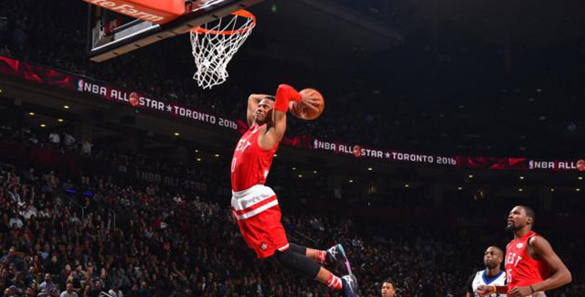
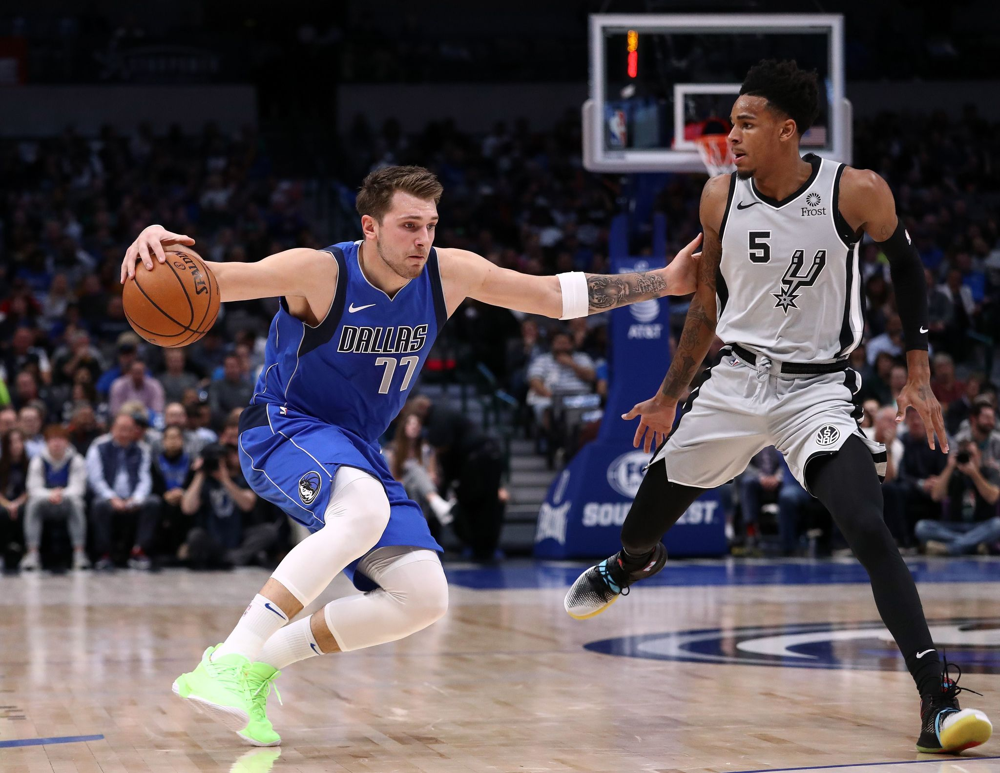

Alero: Es generalmente de una altura intermedia entre los jugadores interiores y los exteriores. Su juego está equilibrado entre la fuerza y el tiro. Es un puesto importante, por su capacidad de combinar altura con velocidad. En ataque debe ser buen tirador de tres puntos y saber culminar una entrada hasta debajo del tablero contrario, son piezas básicas en lanzar el contraataque y suelen culminar la mayoría de ellos. Conocidos como 3 en la terminología empleada por los entrenadores.
Ala-Pívot: Es un rol más físico que el del alero, en muchos casos con un juego muy similar al pívot. Obtiene la mayoría de los puntos en el poste bajo, aunque algunos pueden llegar a convertirse en tiradores muy efectivos. Sirven de ayuda al pívot para impedir el juego interior del equipo contrario, y cierran el rebote. Conocidos como 4 en la terminología empleada por los entrenadores. Pívot: Suelen ser los jugadores de mayor altura del equipo, y los más fuertes muscularmente. Normalmente, el pívot debe usar su altura y su potencia jugando cerca del aro. Un pívot que conjunte fuerza con agilidad es una pieza fundamental para su equipo. Son los jugadores que más sorprenden a los aficionados noveles, por su gran altura. En Europa el pívot medio ha evolucionado más y es capaz de abrirse hacia afuera para tirar. En defensa buscan recoger el rebote corto, impedir el juego interior del equipo contrario y taponar las entradas de jugadores exteriores. Conocidos como 5 en la terminología empleada por los entrenadores.
Un partido de baloncesto se divide en cuatro periodos de tiempo o cuartos de diez minutos, según las reglas de la FIBA,53 o doce minutos en la NBA.54 Los partidos de los campeonatos de la NCAA constan de dos tiempos de veinte minutos.55 A medio tiempo, se realiza una pausa de quince minutos y los equipos cambian de canasta. Cada equipo está formado por doce jugadores como máximo. Cinco de ellos juegan, y los otros son los suplentes. El entrenador puede cambiar a los jugadores tantas veces como desee aprovechando interrupciones en el juego. Al comenzar el partido, un jugador de cada equipo se ubica dentro del círculo central, cada uno a un lado de la línea que divide el campo de juego en dos mitades. Los demás jugadores deben estar fuera del círculo. El árbitro lanza la pelota hacia arriba desde el centro del círculo y los dos jugadores saltan verticalmente para intentar desviarla, sin cogerla, hacia algún compañero de su equipo. El cronómetro se para cada vez que el árbitro toca el silbato, en caso de falta o salida del balón, por ejemplo, por lo que la duración real del partido puede exceder ampliamente el tiempo de juego reglamentario. No hay tiempo extra como en el fútbol. Las canastas encestadas después de la señal de final de tiempo se cuentan si el tiro fue iniciado durante el tiempo reglamentario («canasta sobre la bocina»).